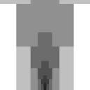

Overview#

Reality Stone
infinity:reality_stone - Color
- Red (
#FF0130) - Container
 Aether
Aether- Found in
- Aether Chamber, Svartalfheim
- Power
infinity:reality_stone
You get the Reality Stone's power by holding the stone or the Aether in either hand, wearing the stone in the  Curios head slot,
putting it in your gauntlet, or putting it in a Cosmi-Rod. Drop the Aether and left-click it to get the stone. To turn it back into the
Aether, hold the stone in your off hand and use Insert Reality Stone with an
Curios head slot,
putting it in your gauntlet, or putting it in a Cosmi-Rod. Drop the Aether and left-click it to get the stone. To turn it back into the
Aether, hold the stone in your off hand and use Insert Reality Stone with an  Empty Aether, or right-click an
Empty Aether on the ground while holding the stone.
Empty Aether, or right-click an
Empty Aether on the ground while holding the stone.
Abilities#
Block Saving#
Unlocks Copy Block and Paste Block.
Copy Block saves the block you're looking at, up to 30 blocks away. Unbreakable blocks can't be copied. Paste Block turns the block you're looking at into your saved block, or every non-air block within 5 blocks if you're sneaking. Paste respects build permissions and claims. Your saved block stays through death and relogging and shows as the Paste icon.
infinity: · palladium:dummy
Size Changing#
Unlocks Size Control. Turn it on and scroll to grow up to 5× or shrink to 0.1×.
Turn on Size Control in the ability bar and scroll. Down shrinks you (0.9×, 0.8× and so on down to
0.1×) and up grows you (2×, 3×, 4×, 5×, and you move faster when you're bigger). Turning Size Control off puts you back to
normal size. Uses 
infinity: · palladium:
Invisibility#
Properly invisible. No body, no armor, no name tag.
infinity: · palladium:
Change the Weather#
Hold for a wheel with Clear, Rain and Thunder.
infinity: · palladium:
Skill tree costs#
Block Saving costs 128  Aspects of Existence. Everything else costs one.
Aspects of Existence. Everything else costs one.
| Ability | Cost | Unlock after | Use |
|---|---|---|---|
| Block Saving | 128 | Nothing | Upgrade |
| Size Changing | 1 | Nothing | Scroll |
| Invisibility | 1 | Nothing | Toggle |
| Change the Weather | 1 | Nothing | Hold |
| Everything | 131 | ||
Size Changing steps#
Each scroll while Size Control is on moves one step. These are the height and width scales set through Pehkui:
| Direction | Steps |
|---|---|
| Scroll up (bigger) | 2×, 3×, 4×, 5×. You also move faster. |
| Normal | 1× |
| Scroll down (smaller) | 0.9×, 0.8×, 0.7×, 0.6×, 0.5×, 0.4×, 0.3×, 0.2×, 0.1× |
Copy and paste#
- Copy works up to 30 blocks away and won't copy unbreakable blocks.
- Paste changes the block you're looking at, or every non-air block within 5 blocks of it while you're sneaking.
- Paste checks build permissions and claims, so it won't work on land you can't build on, and it never touches unbreakable blocks.
- Your saved block stays through death and relogging. The Paste icon shows what it is.